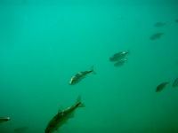
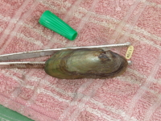
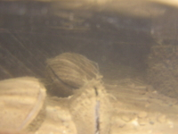

{kind=link}
{kind=link}
{kind=link}
{kind=link}
{kind=link}
{kind=link}
{kind=link}
In the News

A few places where my work has been reported to a larger community
My research interests are centered on patterns in ecology across landscapes and through time. I am especially interested in the interplay of spatial and temporal dynamics and have a strong interest in understanding how obligate linkages between populations affect these dynamics, including parasite, mutualist and predator-prey relationships.Most of my work takes place in aquatic ecosystems and I have a deep interest in how these habitats affect the organisms living in them and, in turn, are affected by their inhabitants . My current work, as a post-doctoral researcher at Hancock Biological Station, addresses these topics using a variety of aquatic animals in Kentucky Lake and the Midwest. For example, I am describing long-term (ca. 20 years) population patterns in space and time of zooplankton in Kentucky Lake.
My graduate research focused on using freshwater mussels as a model for symbiotic interactions. Mussels are an interesting case study, because they do not follow the typical life history patterns of parasites and are of critical conservation concern. I hope that by carefully observing the interactions between mussels and their hosts, my research will contribute to the conservation of this highly endangered fauna. By improving our understanding of this unique and imperiled fauna, I believe that its atypical life history will shed new light on the interactions between hosts and parasites.
I have pursued an understanding of these interactions, some general methological themes have caught my attention and have enhanced my ability to understand these interactions. Of particular interest to me, has been the challenge of gathering data on difficult to sample organisms. Mussels fit squarely into this description; infecting fish as microscopic ectoparasites (although other terms may be used here), excysting from fish at less than a milimeter long and growing to macroscopic animals that may survive to ages of more than 100 years. Along these lines, I have participated in and/or led studies of long- term mark-and-[recapture datasets and population genetic studies to track the ecology and potential for evolution.
Contact me for more information or reprints
A collection of examples of work that has been presented at professional meetings
Levine et al 2007
Ecological Society of America
Levine et al 2006
Ecological Society of America
Levine et al 2005
Freshwater Mollusk Conservation Society
Benight et al 2006
Undergraduate Research Forum
Iffland et al 2007
Undergraduate Research Forum
Saxen et al 2007
Undergraduate Research Forum
Francisco , Mueller et al 2011.
Posters at the Capitol
Basic information and/or visuals from various presentations
Places where my opinion or data have been used to inform conservation actions
A few places where my work has been reported to a larger community
Some of these bridge the gap between personal and professional...and keep me saying "wow," when I'm otherwise exhausted. Others stand alone, but definitely keep me going.